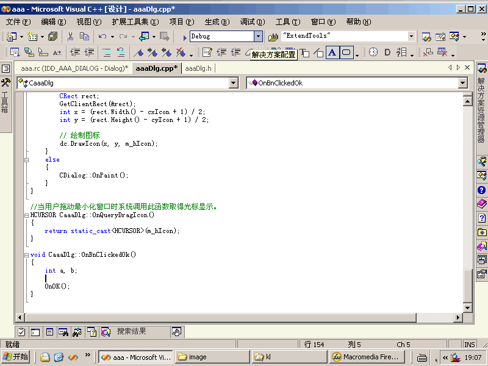

|
自动格式化VC代码:
（参见《编程规范和范例》）
完成《编程规范和范例》中的：
1-7：if、for、do、while、case、switch、default等语句自占一行，且if、for、do、while等语句的执行语句部分无论多少都要加括号{}。
1-10：程序块的分界符（如C/C++语言的大括号‘{’和‘}’）应各独占一行并且位于同一列，同时与引用它们的语句左对齐。在函数体的开始、类的定义、结构的定义、枚举的定义以及if、for、do、while、switch、case语句中的程序都要采用如上的缩进方式。
1-11
：在两个以上的关键字、变量、常量进行对等操作时，它们之间的操作符之前、之后或者前后要加空格；进行非对等操作时，如果是关系密切的立即操作符（如－
>
），后不应加空格。
?2-4：在程序块的结束行右方加注释标记，以表明某程序块的结束。
自动修改结束行右方加的注释：
设置：
-
任何情况下自动增加结束注释。如果选择此项，则在自动格式化时增加结束块注释。
-
任何情况下自动修改结束注释。如果选择此项，则在自动格式化时自动修改结束块注释。
- 结束块标识。用以标识自动增加结束块注释。可用于本地化。
注意：如果你在设置中选择了“任何情况下自动增加结束注释”。要使用本功能，必要条件是：代码已经满足《编程规范和范例》的要求。否则，可以出现意想不到的结果。
如果修改程序块的前部，此版本中能自动修改结束行右方加的注释。
但是存在一个 BUG：
当程序块为：
if (a ==
b
―― （1）
&& c ==
d) ――
（2）
{
MessageBox(_T("OK"));
} // 结束 if (a == b && c == d)
―― （3）
如果在（1）处修改为：if(a != b
则（3）处自动改为：// 结束 if (a ！= b && c == d)
但是在（2）处修改，则（3）处不变。要自动改变的话，要把光标放到（1）处，再执行“扩展工具集->自动修改程序块结束行的注释”。也可在命令窗口中执行“VisualStudioNetExtendTools.Connect.ModifyEndLineComment”命令。当然最简单的是在（1）处加个空格，然后下移光标就可以了。
此功能同时能在 C#、JAVA 中使用。由于本人没学过这两种语言，所以没有考虑它们的特殊方法。你在使用时发错误，或有好的建议，请告诉本人（BUG
报告表）。
使用方法：回车或光标键下移一行，则执行此功能。光标上移则不执行此功能。
动画演试：

下一步 |